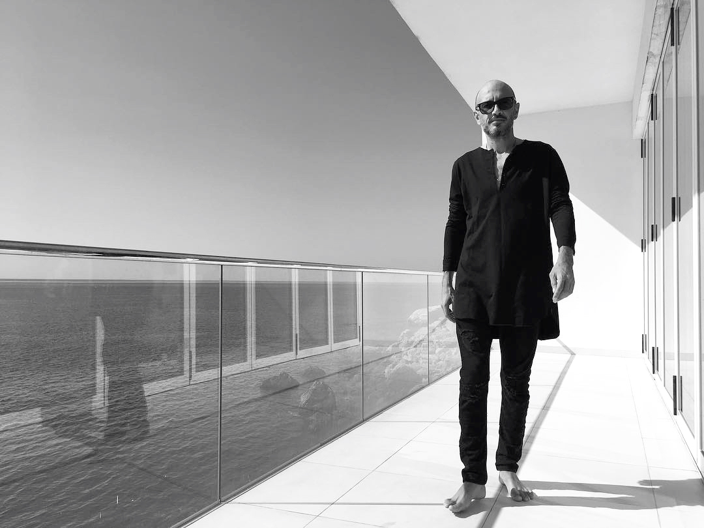
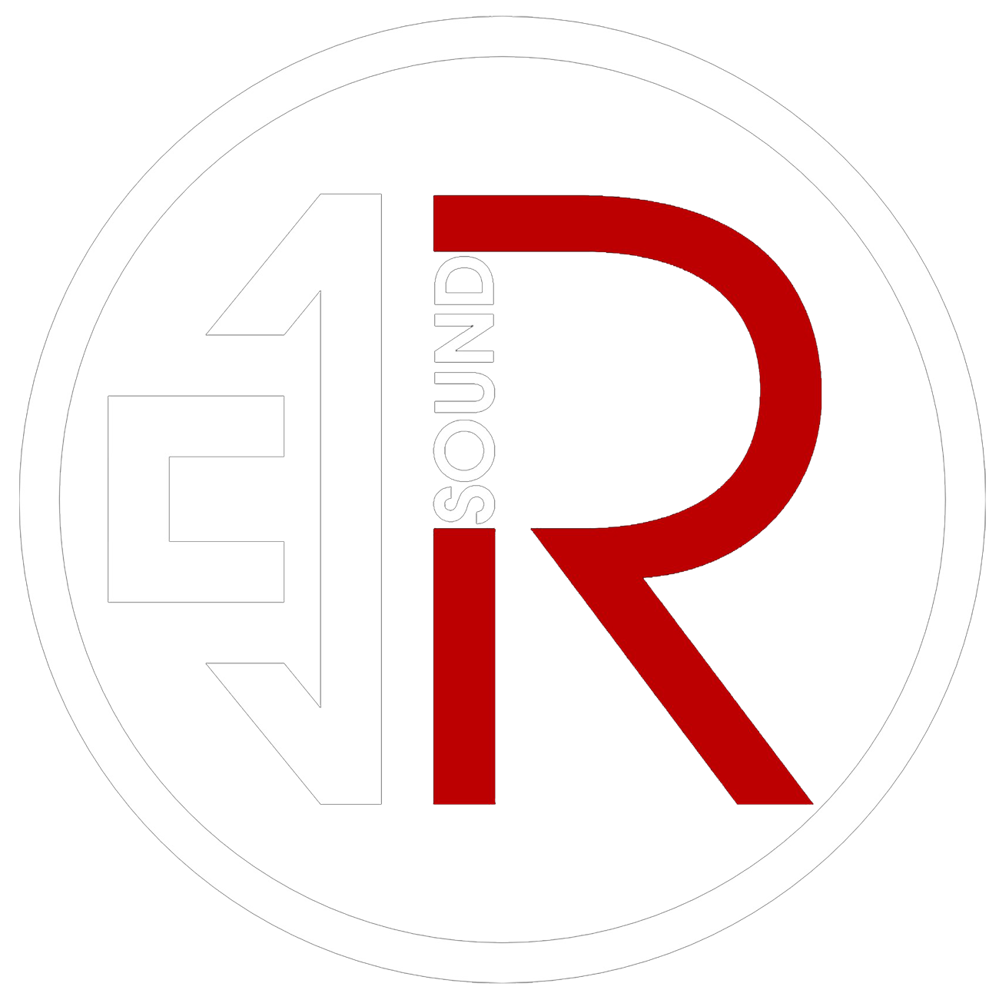

Это танцевальное событие представляют две опытные профессиональные промо группы влюбленные в свое дело, всегда подходя с творчеством и энтузиазмом к организации мероприятий.
Электронная музыка давно стала таким же полноценным форматом как рок, джаз, фанк, поп и прочие напровления,со своими поклонниками, фанатами, стереотипами, своей историей -это значительный и значимый сегмент часть культуры. Многие звездные мировые имена стали серьезными брендами.
Мы хотим знакомить наш город и молодых людей с достойным форматом танцевальных событий. Немаловажную роль в популяризации качественной электронной музыки и событийности для Ярославля , имеет приглашение именитых, самобытных, талантливых артистов.
DR.SPY.DER - один из самых авторитетных специалистов в своей области – звезда! Его выступление станет резонансным событием не только для Ярославля, это мероприятие заинтересует гостей из Иванова, Костромы и других городов и для всех влюбленных в house музыку во всем ее многообразии! DR.SPY.DER – это знак качества события!!!

Борис Замирович Зленко (род. 28 ноября 1970, Москва) — российский диджей, музыкант, музыкальный продюсер московского клуба «Крыша мира», выступающий под псевдонимом DR.SPY.DER.
Участник музыкальных коллективов и проектов : «Step 2 Sun», «Kоntrabanda Dj», «Boris the Spyder», «The Conservators», «Underground Moscow», «Djin Mask” В 1995 году стал разработчиком первого диджейского пульта с эквалайзерами на каждый канал - Gemini 25 / Techno Master. За свои многочисленные достижения стал "Лучшим диджеем 2003 года" по версии Night Life Awards и «Лучшим андерграунд диджеем» 2014, 2015, 2016 годов.
Борис Зленко родился в 1970 году в городе Москва. С самого раннего детства одним из увлечений Бориса была музыка. Несмотря на отказ музыкальной школы принять его в ряды учеников, он продолжал любить музыку и делал всё возможное для поиска новой, в то время многим не понятной, электронной музыки.
Район, где жил будущий DJ Spy.der, уже в 80е был эпицетром диско движения . Именно там он впервые окунулся в атмосферу нового, по тому времени, электронного звучания. Такие музыкальные коллективы как Zodiac, Space, Kraftwerk, Art Of Noise, Jean Miсhel Jarre и Depeche Mode- легли в основу его музыкального вкуса.
В 1985 году Борис Зленко начинает диджействовать на школьных дискотеках. В конце 80-х знакомится с Евгением Рыбаковым ( DJ Fish) с которым и начинает свою музыкальную карьеру. Воспитанным в старой школе СССР, им была неприятна и даже ненавистна любая форма коммерциализации - особенно в музыке, поэтому когда происходило формирование их музыкального направления - Борис и Евгений сразу почувствовали и полюбили ту честность и даже где-то запретность новой музыки под названием Техно.
«ИДЯ С НАМИ - ВЫ ИДЕТЁ В БУДУЩЕЕ» - гласил девиз рейва TECHNO PEOPLE 96, организаторами которого являлись DJ Spy.der и DJ Fish, они же Борис Зленко и Евгений Рыбаков. Музыка в массы двигалась не просто, поэтому было принято решение облегчить поиск интересной музыки для Российских диджеев...
В середине 90-х Зленко и Рыбаков открыли первый в России профессиональный магазин для диджеев «ДискоксиД», в котором был большой выбор диджейского оборудования, а музыкальный материал на виниле и CD обновлялся еженедельно. С начала в 90-х DJ Spy.der и Fish познакомились с первыми техно-музыкантами России (The Соol Front, Arrival), поэтому синтез звука и звукоинженерия были преподаны им из первых рук.
Понимая необходимость создания своей музыки, под Дискоксидом в 1995 году была создана станция «Solaris station» - аналоговая студия - ставшая плацдармом дальнейшего развития проектов: cool front , conservators, g run, el cosmo. Первые пластинки от лейбла «Solaris station» были выпущены на Чешском виниловом заводе в 1996 году. С этого момента начинаются самые яркие выступления, проходившие в самых культовых техно-клубах , а также на передвигающихся платформах на Love parade 1999/2000.
В 2003 году DJ Spy.der стал участником знаменитого тура группы «T.A.T.U», а в 2004 году соорганизатором платформы нового времени на Street parade в Цюрихе.
Также в послужной список диджея входит: участие во всех главных танцевальных событиях и рейвах своего времени; участие в нескольких рейвах «Орбита», в том числе организация первого; неоднократное участие в немецком Love Parade; участие на швейцарском рейве Energy; играя каждый сезон на Казантипе с 1997...1998, 1999 оганизатор и идейный вдохновитель фестиваля Российских электронных музыки - МИРОВОЗРЕНИЕ!
2001-2002 являлся министром культуры , в те годы республике впервые был придан международный статус - а также было выбрано - Направление ТЕХНО! Одной из идей того времени - было создание гармоничного состояния прибывших - так родилось понятие биоритм Казантипа... гуманизм в основе! 2009 участник международного лагеря на Burning man.
С 2006 по 2016 года являлся резидентом, идеологом и музыкальным продюсером легендарного клуба Москвы - «Крыша мира». После стал организатором-идеологом музыкально-танцевальных мероприятий ROOF TOP TRIBE , а также учредителем и музыкальным продюсером «KRYSHA MIRA MUSIC».
PLAYDAY - проект Дмитрия Разумова, организатора клубных событий с более чем 14-летним стажем, выступавшего в роли со-организатора и диджея крупнейших клубных событий и фестивалей при участии звезд российского и мирового масштаба:
Infected Mushroom, Aly & Fila, Alex M.O.R.P.H., Richard Durand, Matt Darey, Stoneface & Terminal, Bobina, Feel, Vladimir Fonarev, Groove, Moonbeam, Denis A, Dusty Kid, Spartaque, Alex Di Stefano, Christian Cambas, Daniel Portman...
Популярная сцена: TаТу, Баста, Ёлка, Павел Воля, Звери, Руки Вверх, Иванушки Int., Бумбокс... PLAYDAY создает мероприятия, объединяющие людей, влюбленных в электронную музыку!
R_sound - команда профессионалов - организаторов различных мероприятий, включая ди-джеев, веб-дизайнеров, видеорежиссеров и операторов.
Один из основных видов нашей деятельности - это интересно и качественно передавать людям атмосферу мероприятия, посредством прямых видео трансляций, записей live-миксов, а так же съёмкой видео клипов.
Всё это мы создаём на профессиональном оборудовании. Многокамерная онлайн Видео трансляция в HD и FullHD качестве с отличным звуком - новое дыхание в мире маркетинга.